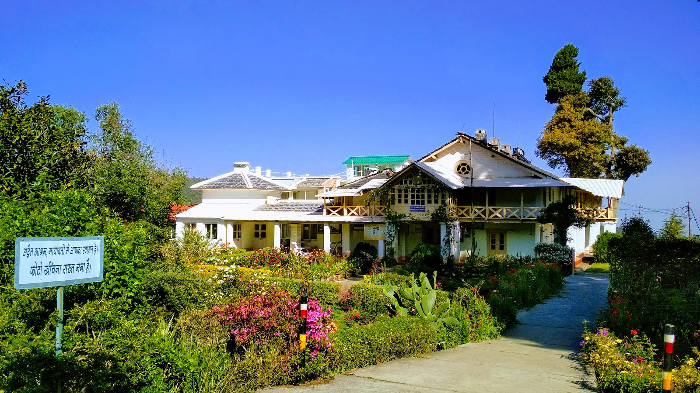
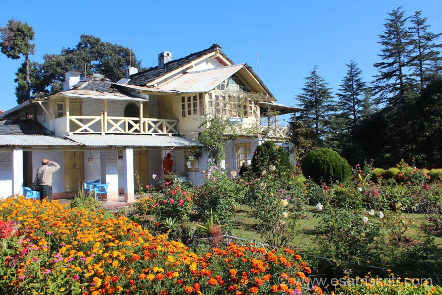
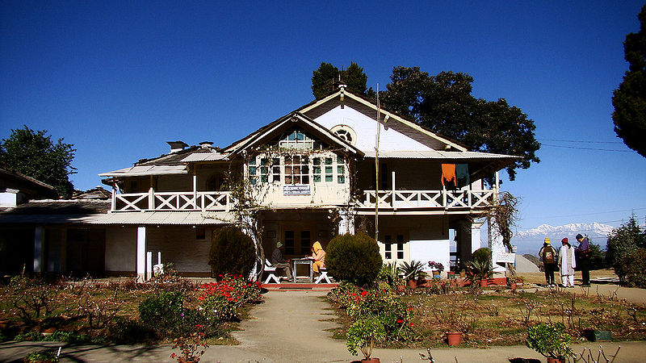

Mayawati Ashram, also known as Advaita Ashrama, is a serene spiritual retreat located near Lohaghat in the Champawat district of Uttarakhand. Established by Swami Vivekananda in 1899, this ashram is dedicated to the philosophy of Advaita Vedanta (non-dualism), where the focus is on inner realization rather than ritual worship. Surrounded by dense forests and offering breathtaking views of the snow-clad Himalayas, the ashram provides a peaceful and meditative environment for seekers of truth and spiritual knowledge.
Unlike traditional temples, Mayawati Ashram maintains a unique silence and simplicity, encouraging visitors to connect with their inner self through meditation, reading, and contemplation. The calm surroundings, fresh mountain air, and panoramic views of the Himalayan ranges create a deeply soothing experience. The ashram also houses a library and publishes spiritual literature, making it an important center for spiritual learning and reflection in Uttarakhand.
March to June offers pleasant weather and clear Himalayan views, ideal for peaceful visits and meditation. September to November provides cool air and a calm atmosphere after monsoon. Winters (December–February) are cold but offer misty beauty and deep silence, perfect for spiritual retreats.
Meditation in peaceful surroundings, reading spiritual literature, enjoying panoramic Himalayan views, exploring forest trails, and experiencing the philosophy of Advaita Vedanta. The silence and natural beauty make it ideal for introspection and relaxation.
Maintain silence and respect the spiritual environment. Photography may be restricted in certain areas. Carry essentials as facilities are limited. Ideal for peaceful visits rather than tourist activities. Dress modestly and follow the ashram guidelines.
"At Mayawati Ashram, where silence becomes the teacher and the Himalayas stand as witnesses, one discovers that true peace is not found outside, but within — in the stillness of the mind and the depth of the soul."